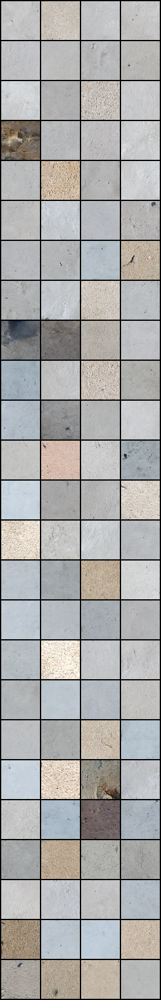
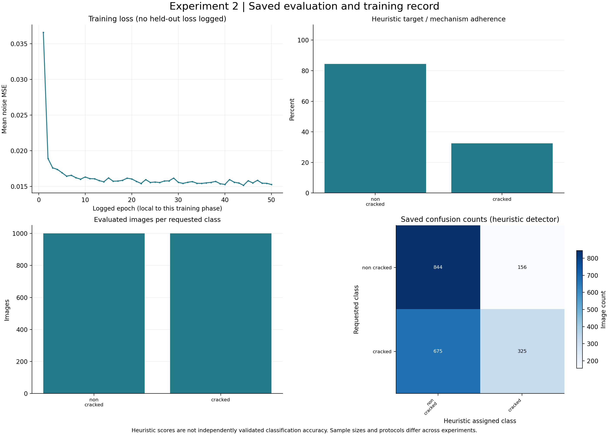

AIM
What this experiment was trying to learn
Does supplying a binary crack-status label produce output groups that a fixed image-only crack heuristic distinguishes in the requested direction?
TECH STACK
Implementation choices
PyTorch · conditional U-Net · class embedding · balanced sampler · AdamW · CUDA
PROCEDURE
How it was run
Reuse the processed 64-pixel SDNET training manifest and encode non-cracked as 0 and cracked as 1. Use inverse class-frequency sample weights with replacement. Balancing changes exposure probabilities, not the number of unique cracked images. Add the learned class embedding to the timestep representation and train the conditional SmallUNet for 50 logged epochs. Generate the saved 1,000-image collection for each condition, analyse every output, and compare requested labels with heuristic assignments.
RESULT
What the evidence says
2,000 generated images evaluated. Requested-class agreement with the morphology heuristic: 58.45%. The detector has not been independently calibrated for this generated-image domain.
OBSERVATIONS
What appeared in the outputs
The dominant observed failure is asymmetric agreement. There are 675 cracked requests assigned non-cracked and 156 non-cracked requests assigned cracked. Precision, recall and F1 derived from this matrix describe correspondence to requested conditions under this heuristic. Requested labels are generation instructions, so these statistics are not supervised classifier performance on human-labeled crack images. A balanced output count does not remove detector bias or make the image collection representative of deployment prevalence.
ASSUMPTIONS
Decisions behind the result
Binary labels: Crack status is sufficient as an initial conditioning variable. No crack path, width, severity or cause is specified. Balanced sampling: Rare cracked images need greater exposure. Sampling with replacement may repeat the same examples; it does not create independent data. Generated class targets: The requested condition is the intended output attribute. A request is not evidence that the generated image contains the attribute. Auxiliary classifier: A preliminary classifier or visual count can validate generated crack presence. Not established; current primary results use the documented image heuristic.
ERRORS & SOURCES OF ERROR
What could mislead us
Geometry-based labels and detectors are proxies. Historical checkpoint exposure, small or unequal sample sizes, differing fidelity implementations and domain shifts limit interpretation. See the research audit for the corrected protocol.
CONCLUSION
Research takeaway
Binary conditioning adds an explicit generation instruction, but the saved heuristic evaluation shows substantial failure on cracked requests. The experiment is a useful control baseline, not a validated crack classifier or a demonstration of reliable structural damage synthesis.
RESULT IMAGES
Generated outputs


CURRENT EVALUATION ADDENDUM
Measured results and their limits
2,000 generated images evaluated. Requested-class agreement with the morphology heuristic: 58.45%. The detector has not been independently calibrated for this generated-image domain.
| Requested class | Images | Heuristic adherence / alignment |
|---|---|---|
| non cracked | 1000 | 84.40% |
| cracked | 1000 | 32.50% |
Inspect the metric record · Research protocol and readiness

Fidelity scores in historical reports used differing reference samples or implementations. They are not a controlled cross-experiment leaderboard. New clean training and independent validation remain outstanding.
FULL REPORT CONTENT
Technical record
Current research report · Revised 22 November 2026. Methods, results, assumptions and validation limits are presented in full below.
Experiment 2 Research Report
Binary crack status conditioning at 64 by 64 pixels
Revision: 2026-11-22. Study type: retrospective computational experiment. Historical checkpoint and saved evaluation; prospective validation is identified separately.
Abstract
Binary class embeddings and inverse-frequency sampling introduce a requested crack-status input into the 64-pixel DDPM. The historical checkpoint completes 50 logged epochs with final noise MSE 0.015247. Later heuristic analysis covers 1,000 outputs per requested class. Requested-label agreement is 58.45% overall: 84.40% for non-cracked requests and 32.50% for cracked requests. These are detector agreement measurements, not independently validated crack-classification accuracy. Conditioning is implemented, but reliable crack-specific control is not established.
1. Aim and research question
Does supplying a binary crack-status label produce output groups that a fixed image-only crack heuristic distinguishes in the requested direction?
A learned binary embedding and balanced training sampler should provide a class-control signal. Support requires observing both requested groups and measuring error asymmetry; a low distribution distance alone cannot verify crack presence.
2. Technical stack and model specification
| Item | Specification and provenance |
|---|---|
| Image shape | 64 by 64 RGB |
| Denoiser | SmallUNet |
| Checkpoint tensor parameters | 3,258,627 |
| Image / conditioning channels | 3 RGB + class embedding |
| Requested categories | 2 |
| Completed logged epochs | 50 |
| Final logged noise MSE | 0.015247160 |
| Minimum logged training MSE | 0.015137788 at local epoch 44 |
| Learning rate | 0.0002 (trainer source default; optimizer not saved) |
| Batch size provenance | Trainer default 32; historical command-line arguments not fully captured |
| Software | Python, PyTorch, torchvision, NumPy, Pillow, SciPy; Matplotlib and metric dependencies for evaluation |
| Optimizer | AdamW; beta values 0.9 and 0.999; weight decay 0.01 (saved optimizer where available, otherwise source defaults) |
| Gradient norm clipping | 1.0 in trainer source |
| Precision policy | Current historical trainer enables CUDA autocast and GradScaler; exact historical execution precision is not independently logged |
| Class dropout | Not used in the binary/unconditional source trainers |
| Sampling | 1,000-step ancestral DDPM for the shared pretrained reproduction path |
| Checkpoint selection | Released phase-final checkpoint; no independently held-out selection record |
| Augmentation | Image normalization; external data addition in Exp3, not a verified geometric augmentation benefit |
Epoch numbering in checkpoints is zero-based for Experiments 1–3 and one-based for the later phases; the training log is used to establish the completed phase length. A low training loss is not evidence of held-out generalization. Exact historical CUDA/PyTorch versions, CLI arguments and original peak resource measurements are not fully captured, so later environment checks are not substituted for historical runtime provenance.
3. Dataset composition and provenance
| Historical source | Training-manifest records |
|---|---|
| SDNET2018 | 50,482 |
| Historical label | Records |
|---|---|
| non_cracked | 42,846 |
| cracked | 7,636 |
Total historical training records: 50,482. Source: train.csv. These are processed patches, not counts of independent structures or photographs. Labels for the morphology/mechanism-inspired experiments are derived by image-geometry rules. The historical train/reference design and transfer ancestry do not establish independent holdout performance. Source image identities, alias grouping and current qualified manifests are discussed in Section 10.
Dataset references: SDNET2018 [R6].
4. Mathematical and implementation basis
For normalized image $x_0$, the implemented forward process uses $T=1000$ and a linear variance schedule from $10^{-4}$ to $0.02$. With $\alpha_t=1-\beta_t$ and $\bar{\alpha}_t=\prod_{s=1}^{t}\alpha_s$:
$$x_t=\sqrt{\bar{\alpha}_t}x_0+\sqrt{1-\bar{\alpha}_t}\epsilon,\qquad \epsilon\sim\mathcal{N}(0,I).$$
The denoiser minimizes noise-prediction mean squared error (the expression suppresses constant normalization by the number of image elements):
$$\mathcal{L}=\mathbb{E}_{x_0,t,\epsilon}\left[\lVert\epsilon-\epsilon_\theta(x_t,t,c)\rVert_2^2\right].$$
The condition $c$ is omitted for the unconditional model. This objective is implemented in the diffusion and training modules and follows the DDPM formulation [R1]. Training MSE is an optimization diagnostic, not a perceptual, topology or physical-validity score.
5. Experimental procedure
- Reuse the processed 64-pixel SDNET training manifest and encode non-cracked as 0 and cracked as 1.
- Use inverse class-frequency sample weights with replacement. Balancing changes exposure probabilities, not the number of unique cracked images.
- Add the learned class embedding to the timestep representation and train the conditional SmallUNet for 50 logged epochs.
- Generate the saved 1,000-image collection for each condition, analyse every output, and compare requested labels with heuristic assignments.
These steps reconstruct the procedure supported by saved artifacts and current source. Defaults are distinguished from observed checkpoint/log values; a missing historical execution configuration is not silently reconstructed as a verified run command.
6. Evaluation protocol and statistical interpretation
The primary morphology source is src/evaluate_exp1_2_3_errors.py. At 64 pixels it applies local-background subtraction with window 11, darkness threshold 13.5, minimum component area 6 pixels and nominal span threshold 11 pixels. The 128-pixel path additionally applies a 2 by 2 opening. Component counts, image-axis orientation and local contrast are detector outputs, not physical measurements.
The later fidelity diagnostic uses torchvision Inception-v3 with its classifier removed, 299-pixel resizing and ImageNet normalization. It selects training-manifest references: 160 real and 160 generated images for the stored score. KID uses 100 subsets of up to 128 feature vectors and a cubic polynomial kernel. This custom feature/preprocessing protocol is not interchangeable with a standard torch-fidelity run or the earlier torchmetrics feature-64 scores. The KID standard deviation describes subset variability, not a confidence interval over independent training runs.
Wilson 95% intervals summarize binomial counting uncertainty conditional on the saved generator and heuristic. They do not include training-seed variability, detector bias, source clustering or uncertainty about real mechanisms. Precision, recall and F1 computed against requested conditions quantify heuristic correspondence, not human-labeled classification accuracy. Pixel distances are in image coordinates; no physical millimetre scale is available.
For $k$ accepted outputs among $n$ requests, $\hat p=k/n$ and $z=1.95996$. The Wilson interval is
$$\frac{\hat p+z^2/(2n)\ \pm\ z\sqrt{\hat p(1-\hat p)/n+z^2/(4n^2)}}{1+z^2/n}.$$
For saved count matrix $A$, $A_{ij}$ counts request $i$ assigned heuristic class $j$. Row agreement is $A_{ii}/\sum_j A_{ij}$; proxy precision is $A_{ii}/\sum_j A_{ji}$; $F_1=2PR/(P+R)$, with zero used for undefined zero-denominator cases. These definitions explain the table without changing the meaning of requested labels into ground truth.
7. Results
Overall requested-label agreement: 1,169 / 2,000 (58.45%). The following intervals are calculated from the saved counts; precision and F1 also use these counts rather than rounded JSON rates.
| Requested class | Diagonal / requested | Agreement | Wilson 95% interval | Proxy precision | Proxy F1 |
|---|---|---|---|---|---|
| non_cracked | 844 / 1000 | 84.40% | 82.02–86.52% | 55.56% | 0.6701 |
| cracked | 325 / 1000 | 32.50% | 29.67–35.47% | 67.57% | 0.4389 |
Confusion counts, with requested classes in rows and heuristic-assigned classes in columns:
| Requested / assigned | non_cracked | cracked |
|---|---|---|
| non_cracked | 844 | 156 |
| cracked | 675 | 325 |
Protocol-qualified feature diagnostic
| Saved metric | Value |
|---|---|
| frechet_inception_distance | 61.206 |
| kernel_inception_distance_mean | 0.01921 |
| kernel_inception_distance_std | 0.00214 |
| evaluated_fake_samples | 160 |
| evaluated_real_samples | 160 |
FID and KID summarize feature distributions [R4, R5]; they do not certify crack presence or physical validity. Reference exposure, sample count, feature extraction and image preprocessing are part of the metric definition. Do not rank this value against experiments using another implementation or a different reference distribution.
Earlier report values belong to src/evaluate_metrics.py, which uses torchmetrics feature dimension 64 after resizing inputs to 64 pixels and index-paired AlexNet LPIPS [R11]. The later primary error-analysis score uses a different feature/preprocessing/reference path. Index-paired LPIPS on unpaired generated and real images is a distance diagnostic, not reconstruction fidelity. Earlier low FID values must not be combined with the later protocol as one trend. The pre-revision record is retained in the report archive.
Earlier report values, quoted as recorded rather than recomputed:
| Generated group | Feature-64 FID | Feature-64 KID mean | KID subset SD | Index-paired LPIPS |
|---|---|---|---|---|
| Non-cracked request | 0.72464 | 0.756606 | 0.389974 | 0.416435 |
| Cracked request | 0.701002 | 0.556873 | 0.202802 | 0.425783 |
These values belong to the earlier technical record; original sample identities and execution configuration are incompletely captured. They are not substituted for the later primary diagnostic.
Saved plots and generated examples
Figure interpretation: phase-local training loss, detector-defined rates and saved sample counts. This figure is a descriptive summary, not a controlled leaderboard or an independently labeled accuracy assessment.
Archived illustrative outputs
The following saved illustrations retain their available filenames and request labels. Their membership in the quantified collection is not assumed without an original sampling manifest. They are not a blinded quality study, and their labels are not independent human judgments. The quantitative tables retain the complete stated evaluation denominators.
Cracked condition. Source illustration: exp2_cracked.png.
Non-cracked condition. Source illustration: exp2_noncracked.png.
8. Observations and discussion
The dominant observed failure is asymmetric agreement. There are 675 cracked requests assigned non-cracked and 156 non-cracked requests assigned cracked. Precision, recall and F1 derived from this matrix describe correspondence to requested conditions under this heuristic. Requested labels are generation instructions, so these statistics are not supervised classifier performance on human-labeled crack images. A balanced output count does not remove detector bias or make the image collection representative of deployment prevalence.
This experiment changes several design factors relative to other phases. Resolution, training images, label taxonomy, transfer ancestry, color processing, sampler and evaluator may differ. A before/after visual comparison is therefore hypothesis-generating; no causal attribution to a single architectural or conditioning change is made.
9. Assumptions and their consequences
| Assumption | Implementation or rationale | Consequence and validation status |
|---|---|---|
| Binary labels | Crack status is sufficient as an initial conditioning variable. | No crack path, width, severity or cause is specified. |
| Balanced sampling | Rare cracked images need greater exposure. | Sampling with replacement may repeat the same examples; it does not create independent data. |
| Generated class targets | The requested condition is the intended output attribute. | A request is not evidence that the generated image contains the attribute. |
| Auxiliary classifier | A preliminary classifier or visual count can validate generated crack presence. | Not established; current primary results use the documented image heuristic. |
All image-derived labels assume that visible dark geometry is informative about the intended visual attribute. Real masks, bounding boxes and class labels answer different annotation questions. Additional annotations or a mechanics-inspired name do not independently verify a failure mechanism.
10. Completed audits and prospective validation
The prospective research_v5 manifests contain the following base partition counts. They were constructed after the historical training and do not retroactively make its checkpoints unseen-data models.
| Partition | Base records |
|---|---|
| train | 43,846 |
| validation | 6,606 |
| test | 5,640 |
The shared source audit covers 67,264 originals, with 65,866 distinct decoded RGB images and 1,398 extra exact decoded copies. The v4 perceptual screen found 386 cross-split candidates. V5 conservatively links all 1,111 candidate pairs, including within-split pairs, before assignment; the same pHash ≤3 and dHash ≤6 search then finds zero cross-split candidates. This limited, uncalibrated screen can miss crops, rotations, flips and larger edits. Source names and zero screened matches do not prove site or structure independence.
Scratch training, EMA selection on fixed-noise validation, provenance-checked generation and geometry/fidelity preflight are implemented for the new lineage. Their bounded smoke runs are infrastructure checks. Full clean multi-seed training, independently labeled generated images, external validation and downstream detector utility have not been established by the historical artifacts. A prepared campaign is not a completed experiment.
Computational sharing was tested in a fresh Windows/Python 3.10 CPU environment: the public weights were downloaded and verified and one image per experiment was generated without raw datasets. This confirms that inference can execute under that environment; it does not reproduce model training or validate image quality.
11. Sources of error and errors identified
| Identified issue | Correction or interpretation |
|---|---|
| Low historical class-specific FID interpreted as proven crack control | Feature similarity does not validate the crack attribute; later 32.50% cracked-request agreement exposes this distinction. |
| Missing standalone technical report | This report provides full methods, sample denominators, confusion counts and protocol-qualified interpretation. |
| Accuracy terminology without ground truth | Use requested-label agreement throughout; retain original JSON field names only as artifact identifiers. |
Further threats include segmentation sensitivity to texture and illumination; source overlap and patch clustering; heuristic circularity between curation and evaluation; small or unequal sample budgets; image-derived versus procedurally generated conditioning; reference preprocessing differences; and incomplete historical execution metadata. No structural safety, real crack width, downstream detection benefit, state-of-the-art performance or physical-cause accuracy is claimed from these measurements.
12. Conclusion
Binary conditioning adds an explicit generation instruction, but the saved heuristic evaluation shows substantial failure on cracked requests. The experiment is a useful control baseline, not a validated crack classifier or a demonstration of reliable structural damage synthesis.
13. Reproducibility and artifact record
The released historical weights are used for inference; these commands do not start training. Run from the repository root with the documented dependencies and a fresh output directory.
.\.venv\Scripts\python.exe pipeline/download_models.py
.\.venv\Scripts\python.exe pipeline/checkpoints.py verify
.\.venv\Scripts\python.exe pipeline/generate_cracks.py --experiment 2 --crack-type cracked --count 1 --seed 2026 --output-dir experiments/conditional_ddpm/report_replication_seed2026
A fixed seed requires matching checkpoints, sampling settings, device and software for comparable execution; it does not guarantee cross-device pixel identity or exact replication of a historical example grid. Research training uses a separate scratch lineage and must not overwrite these final weights.
| Evidence | Artifact |
|---|---|
| Primary metric record | EVALUATION_METRICS.json |
| Training log | conditional_training_loss.csv |
| Checkpoint SHA256 | 6ff346e549a0186b50a509d61e5d311b4ceb63cab77870c9f3b149f5935cc3bb |
| Input hashes and revision archive | report_evidence.json |
| Training source | train_conditional.py |
| Evaluation source | evaluate_exp1_2_3_errors.py |
Code is available in the project repository. The six historical checkpoints are distributed in the versioned model release, with a checksum manifest. Raw datasets are not included in that inference bundle. Dataset references identify their publishers, while local source inventories record observed archive hashes and outstanding identity/annotation limitations.
The machine-readable evidence file records input SHA256 values, checkpoint metadata, log handling and exact archived pre-revision sources. The historical reports remain recoverable and are superseded where their claims conflict with the corrected tables above. Original sampling files do not provide a complete checkpoint-hash chain for every historical evaluation image; association with the released phase checkpoint follows the available procedural record. Counts, Wilson intervals and derived matrix statistics are calculated from saved artifacts.
Verified saved-image reproduction
On 22 November 2026, the morphology/spatial analysis was rerun on all saved evaluation images for this experiment in two fresh directories (saved-analysis-20261122-v2 and saved-analysis-20261122-v3). All 49 compared numeric baseline fields matched with absolute tolerance 0.0001 and zero relative tolerance; the two fresh metric JSON records were identical in the same local environment. Per-image row counts, input/output SHA256 values and preservation of the original metrics were verified. Across all six experiments, each run analysed 4,992 images. Fidelity and the manually authored Exp4 comparison block were explicitly excluded, so this does not reproduce historical FID/KID, establish independent accuracy, or execute new sampling or training.
.\.venv\Scripts\python.exe pipeline/reproduce_results.py --run-id my-exp2-review --experiments 2
The command refuses existing run folders and fails on missing historical inputs. Raw evaluation images and physics masks are retained locally and excluded from ordinary Git; Exp1–3 also require their recorded processed-image reference subset. A Git clone alone is sufficient for report evidence verification and published-weight inference, but does not contain every saved-image input. Read the reproduction guide and folder map.
| Verified reproduction | Record |
|---|---|
| Summary | saved_analysis_reproduction.json |
| saved-analysis-20261122-v2 | run_manifest.json |
| saved-analysis-20261122-v3 | run_manifest.json |
14. References
[R1] Ho, Jain and Abbeel (2020). Denoising Diffusion Probabilistic Models. Source
[R4] Heusel et al. (2017). FID proposal in GANs Trained by a Two Time-Scale Update Rule Converge to a Local Nash Equilibrium. Source
[R5] Bińkowski et al. (2018). Demystifying MMD GANs; KID proposal. Source
[R6] SDNET2018 dataset and acquisition documentation. Source
[R11] Zhang et al. (2018). The Unreasonable Effectiveness of Deep Features as a Perceptual Metric; LPIPS. Source
Archival report: the earlier interpretation may contain superseded claims. The current research report takes precedence.
Read the earlier archived technical record
Experiment 2 - Conditional DDPM Formula Report Page 1 Experiment 2 Formula Report Crack-Status Conditional DDPM for Concrete Images This report documents the second concrete crack image generation experiment. Experiment 2 extends the unconditional DDPM baseline by adding a binary crack-status condition so the same model can be sampled as either cracked or non-cracked. Item Value Dataset SDNET2018 processed dataset from Experiment 1 Task Class-conditional concrete image generation Conditions class 0 = non_cracked, class 1 = cracked Resolution 64 x 64 RGB Model SmallUNet DDPM with learned two-class embedding Epochs 50 Diffusion steps 1000 Final checkpoint experiments\conditional_ddpm\checkpoints\conditional_epoch_050.pt Final loss approximately 0.015247
Experiment 2 - Conditional DDPM Formula Report Page 2 1. Aim and Motivation Experiment 1 could generate concrete-like images, but it could not be instructed to generate cracked or non-cracked samples. Experiment 2 addresses that limitation by adding a crack-status condition to the DDPM. Train a DDPM that receives an explicit binary crack-status condition. Generate separate cracked-condition and non-cracked-condition image sets. Compare conditional generation against the unconditional baseline. Measure general distribution similarity while clearly noting that crack correctness still needs visual or classifier-based evaluation. 2. Dataset Structure and Preprocessing 2.1 Dataset Used Experiment 2 reused the same processed SDNET2018 dataset as Experiment 1. Images were already indexed, split, converted to RGB, resized to 64 x 64, saved as PNG files, and normalized to [-1,1] during loading. Quantity Value Total indexed images 56,092 Training images 50,482 Validation images 5,610 Training cracked 7,636 Training non-cracked 42,846 Validation cracked 848 Validation non-cracked 4,762 2.2 Raw Dataset Meaning Raw folder Surface Class folder Condition label Class id D/CD bridge_deck CD cracked 1 D/UD bridge_deck UD non_cracked 0 P/CP pavement CP cracked 1 P/UP pavement UP non_cracked 0 W/CW wall CW cracked 1 W/UW wall UW non_cracked 0 Cracked images contain visible crack lines, fissures, or crack-like separations. Non-cracked images contain concrete texture without a visible crack, though they can still include roughness, aggregate, stains, pores, and illumination variation. The semantic difference between these classes is the reason conditional generation is needed. 2.3 Preprocessing Pipeline raw image -> RGB conversion -> 64 x 64 LANCZOS resize -> PNG uint8 pixel p in [0,255] ToTensor: p -> p / 255 in [0,1] Normalize(mean=0.5, std=0.5): x_0 = 2 * (p / 255) - 1 in [-1,1]
Experiment 2 - Conditional DDPM Formula Report Page 3 3. Conditional DDPM Theory 3.1 Unconditional vs Conditional Modeling The unconditional model estimates the image distribution without a control label. The conditional model estimates image generation under a class condition y. For this experiment, y is binary: y=0 means non-cracked and y=1 means cracked. The model learns a class embedding and adds it to the timestep embedding before the U-Net residual blocks. 3.2 Forward Diffusion The forward noising process is the same as Experiment 1. The condition is not used to add noise; it is used by the denoising model when predicting the noise. 3.3 Conditional Noise Prediction Objective The training target remains Gaussian noise prediction. The difference is that the U-Net now receives both the timestep and the class condition. 3.4 Conditional Sampling During sampling, the desired class label is fixed for the whole reverse process. Setting y=1 asks the model for cracked-condition samples; setting y=0 asks for non-cracked-condition samples.
Experiment 2 - Conditional DDPM Formula Report Page 4
Experiment 2 - Conditional DDPM Formula Report Page 5 4. Experimental Procedure Ord er Step Output 1 Reuse Experiment 1 processed SDNET2018 data data\processed\train.csv and validation.csv 2 Load labels and assign class ids non_cracked=0, cracked=1 3 Create weighted random sampler balanced cracked/non-cracked training batches 4 Train SmallUNet with num_classes=2 for 50 epochs checkpoints\conditional_epoch_050.pt 5 Generate cracked sample grids outputs\samples\cracked_epoch_050_seed_*.png 6 Generate non-cracked sample grids outputs\samples\non_cracked_epoch_050_seed_ *.png 7 Generate 1,000 cracked-condition eval images outputs\evaluation\conditional_cracked 8 Generate 1,000 non-cracked-condition eval images outputs\evaluation\conditional_non_cracked 9 Evaluate both generated sets FID, KID, paired LPIPS 4.1 Balanced Sampler The raw SDNET2018 training split is heavily imbalanced: non-cracked images are much more common than cracked images. The conditional training script uses a WeightedRandomSampler so cracked images are not overwhelmed. This does not change the stored dataset; it changes the probability that each training example is sampled during an epoch. The goal is to give the model enough cracked examples while still learning non-cracked texture. 4.2 Training Configuration Item Value Training script src\train_conditional.py Batch size 32 Learning rate 2e-4 Epochs 50 Optimizer AdamW Mixed precision CUDA AMP enabled when CUDA is available
Experiment 2 - Conditional DDPM Formula Report Page 6 Gradient clipping clip_grad_norm = 1.0 Model parameters 3,258,627 Additional parameters vs Experiment 1 512
Experiment 2 - Conditional DDPM Formula Report Page 7 5. Evaluation Metrics Experiment 2 uses the same general metrics as Experiment 1. These metrics evaluate distributional or perceptual similarity, not guaranteed crack correctness. 5.1 FID 5.2 KID 5.3 LPIPS 6. Results Condition FID KID mean KID std Paired LPIPS cracked 0.701002 0.556873 0.202802 0.425783 non_cracked 0.724640 0.756606 0.389974 0.416435 Both conditional sets scored much lower FID and KID than the unconditional baseline under the same evaluation procedure. This indicates stronger general distribution matching. It does not by itself prove reliable crack generation, because crack presence still requires visual annotation or a validated crack classifier. Experiment FID KID mean Paired LPIPS Experiment 1 unconditional 5.604571 3.419779 0.548679 Experiment 2 cracked condition 0.701002 0.556873 0.425783 Experiment 2 non-cracked condition 0.724640 0.756606 0.416435
Experiment 2 - Conditional DDPM Formula Report Page 8 7. Reference Generated Images 7.1 Cracked Condition Reference Grids cracked_epoch_050_seed_42.png cracked_epoch_050_seed_123.png 7.2 Non-Cracked Condition Reference Grids
Experiment 2 - Conditional DDPM Formula Report Page 9 non_cracked_epoch_050_seed_42.png non_cracked_epoch_050_seed_123.png
Experiment 2 - Conditional DDPM Formula Report Page 10 8. Observations and Limitations The conditional model achieved substantially better general metrics than the unconditional baseline. The learned two-class embedding allows separate cracked and non-cracked sampling commands. A preliminary visual check found about 5 visibly cracked samples out of 16 in one cracked-condition grid, but this is not a final crack-presence metric. The first auxiliary crack classifier reached only 65.79 percent validation accuracy, so automatic crack-presence evaluation is not yet reliable. FID, KID, and LPIPS must not be interpreted as proof that the cracked condition reliably generates real cracks. 9. Conclusion Experiment 2 successfully extends the DDPM baseline from unconditional concrete texture generation to binary crack-status conditional generation. It preserves the same 64 x 64 SDNET2018 setup but adds a learned class embedding, balanced class sampling, and separate cracked/non-cracked generation paths. The formal metrics improve strongly relative to Experiment 1, but a reliable crack-presence result remains pending. 10. Recommended Next Steps Create a manual visual audit CSV for representative cracked-condition and non-cracked-condition samples. Report visible crack rate, texture quality, and artifact rate separately for each condition. Train or validate a stronger crack classifier before using automatic crack-presence rates. Compare Experiment 2 against the 128 x 128 augmented Experiment 3 only after Experiment 3 evaluation is complete.